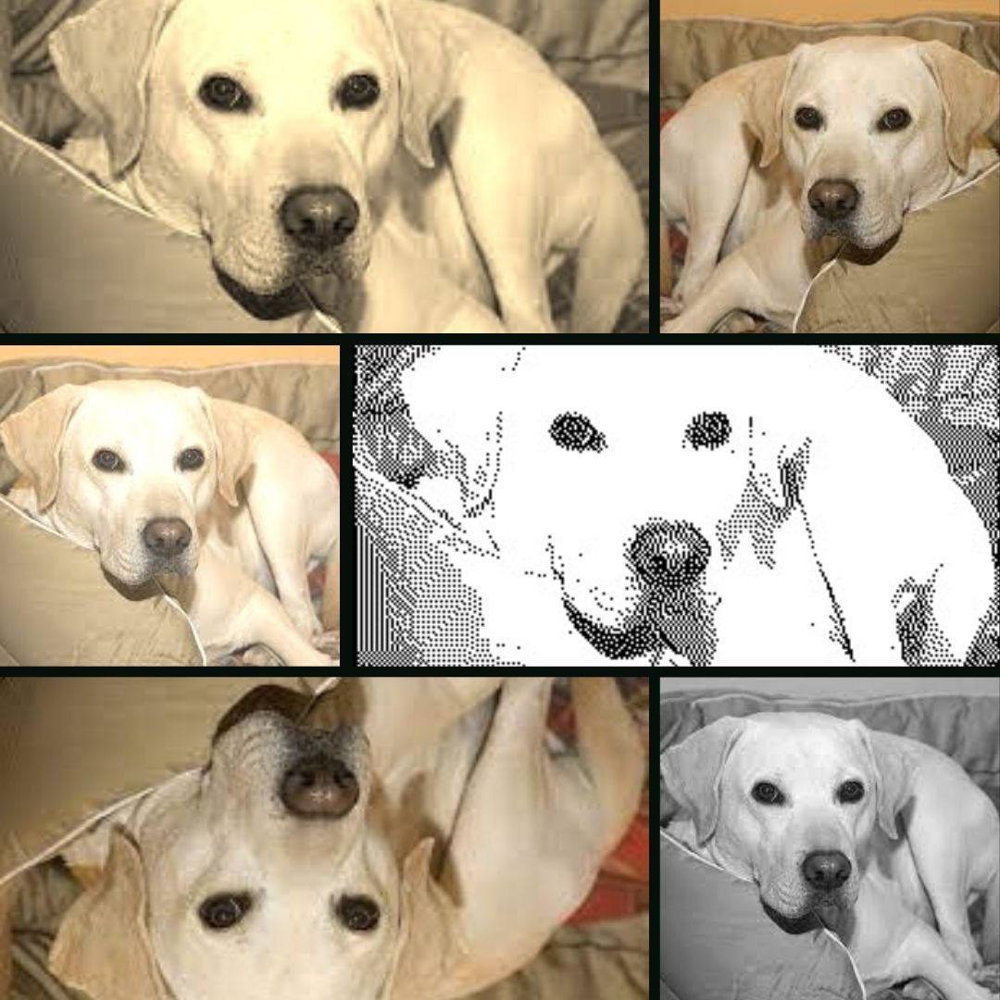

Developed a robust Learning Management System designed to streamline course delivery and enhance student engagement.
Utilized React for front-end development and integrated MongoDB to establish a scalable database.
Additionally, conducted thorough testing and debugging to ensure the platform was stable and error-free.


Implemented Harris corner detection and designed a system for detecting chessboard corners to enable pose estimation.
Integrated camera calibration parameters to ensure accurate pose estimation under varying lighting conditions.
Developed a tool capable of generating 3D world points and detecting chessboard corners in images.

Implemented over 15 image transformation techniques and constructed a dynamic user interface using Java Swing.
The code-base optimization was improved by 30% through the application of the MVC architecture design pattern.
Test-Driven Development with JUnit was emphasized, resulting in the creation of 60+ unit tests for extensive coverage.
Developed a mobile app for gym enthusiasts using SwiftUI, facilitating connections based on shared workouts.
Integrated Google Firebase for backend services, leveraging Firestore for the database and FirebaseAuth for authentication.
Implemented a real-time chat system featuring custom chat cells and optimized data fetching, resulting in a 30% reduction in load times.

Developed a Student-Connect App for international students, enabling seamless communication and collaboration.
Implemented backend functionality using NodeJS, ExpressJS, and PostgreSQL for handling API requests, database operations, and user authentication.
Built a React front-end that allows users to search universities, access student information, and establish connections.
Developed a robust video classification model using a 3D Convolutional Neural Network with TensorFlow and Keras, designed to classify video frames into 14 classes.
Addressed data imbalance and implemented video processing functions for resizing, normalizing, and padding frames.
Monitored training progress and evaluated model performance using validation datasets.
Developed a model to classify reviews as positive or negative, employing two main approaches: an LSTM model and a Naive Bayes classifier.
For the LSTM model, text data was preprocessed by cleaning, tokenizing, and padding sequences, followed by building a Sequential model with an Embedding layer, SpatialDropout1D, and an LSTM layer, achieving an accuracy of 79% on the test set.
For the Naive Bayes classifier, reviews were cleaned, stemmed, and stopwords removed, converting the text into a bag-of-words model using CountVectorizer, achieving an accuracy of 73% on the test set.